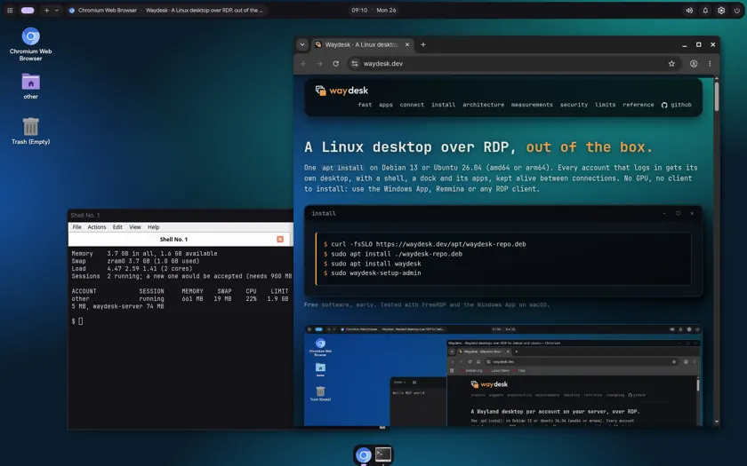
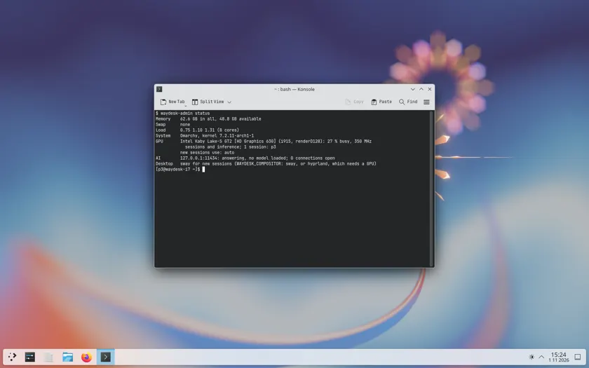
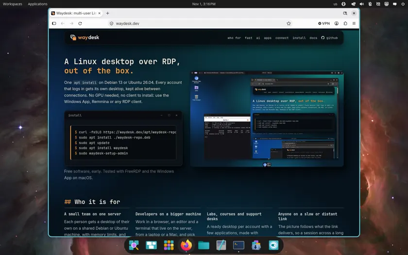
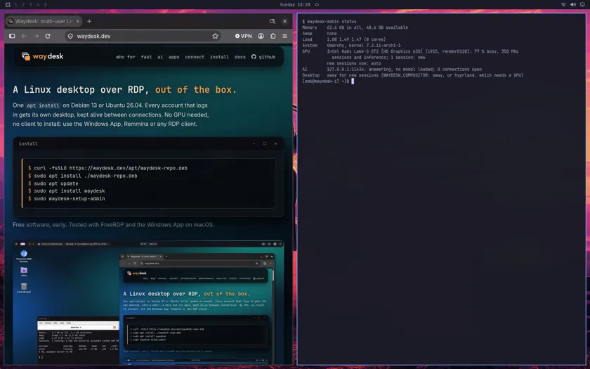
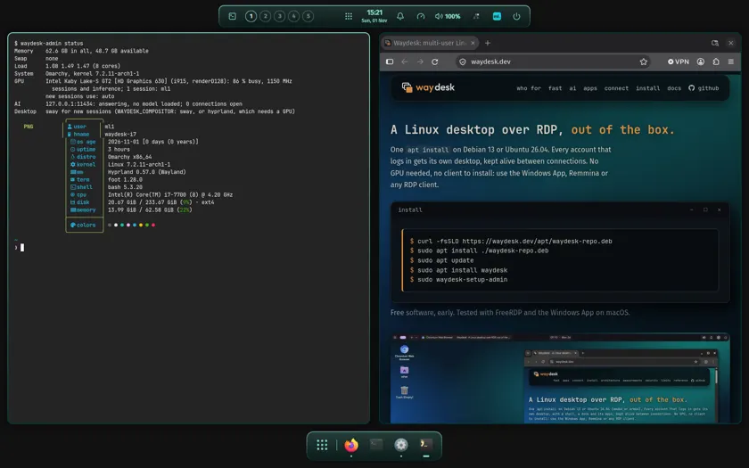

Multi-user Linux desktops over RDP, out of the box.
One apt install on Debian 13 or Ubuntu 26.04, or a signed pacman repository on Arch. Every account that logs in gets its own desktop, kept alive between connections. No client to install: use the Windows App, Remmina or any RDP client.
$ curl -fsSLO https://waydesk.dev/apt/waydesk-repo.deb
$ sudo apt install ./waydesk-repo.deb
$ sudo apt update
$ sudo apt install waydesk
$ sudo waydesk-setup-adminPick the desktop for each account
Every account gets the Waydesk desktop unless you choose another with one command, waydesk-admin users set NAME --desktop plasma (or cosmic, hyprland). The other desktops are ordinary packages of your distribution: install the one you want, then give it to the account. What was tested, and where.

The default: a shell, a launcher and a dock. Debian 13 and Ubuntu 26.04, amd64 and arm64. An idle session takes about 0.7 GB.

Tested on Arch with an Intel GPU, and on Debian 13. Install it from your distribution. An idle session takes about 0.65 GB.

Tested on Arch with an Intel GPU. Install it from your distribution. An idle session takes about 0.9 GB.

Tested on Arch with an Intel GPU; Hyprland needs a GPU. An idle session takes about 0.75 GB.

Tested on Arch with an Intel GPU; Hyprland needs a GPU. An idle session takes about 1.0 GB.
$ sudo waydesk-admin config check ml1
OK Hyprland accepts it
OK the GPU can be opened
WARN hypridle: display off, 11 min
0 problems, 1 warningsOr keep your own sway or Hyprland setup: config check says whether it will work as a session. Omarchy and ML4W are tried; other dotfiles are not.
Who it is for
A small team on one server
Each person gets a desktop of their own on a shared Debian or Ubuntu machine, with memory limits, and one RDP client is all they need.
Developers on a bigger machine
Work in a browser, an editor and a terminal that live on the server, from a laptop or a Mac, and pick the session up again where you left it.
Labs, courses and support desks
A ready desktop per account with a few applications, made with waydesk-admin users add, on a server you already run.
Anyone on a slow or distant link
The picture follows what the link delivers, so a session across a long or lossy connection stays usable.
Built to stay light and fast
Most of the work is in not wasting what a server has: memory, CPU and a slow link. Every figure has its method on the measurements page.
TCP BBR for the connection
On a distant link with about 4 % loss the connection went from 0.3 to 2 to 4 Mbit/s, and typing stopped arriving in bursts.
The picture follows the link
Frames and bytes in flight follow the path; the video bitrate follows what the link delivers, from 300 kbit/s to 10 Mbit/s.
Tuned for screens, on the CPU or the GPU
Screen-content mode, only the changed rectangles: about half the bandwidth of the camera mode. In software by default; with an Intel, AMD or NVIDIA GPU the desktop and the encoder move to it.
The pointer has no delay
The client draws it with its real shape, so it moves at once; only the shape arrives a round trip late.
Ceilings, compressed swap, a refusal
A memory ceiling per account, compressed swap, and a refusal when the machine is full: 7 to 8 users with Chromium, Calc and VS Code open fit on 8 GB.
One session per account
Each account in its own session and systemd slice; the daemon has no privileges, and a small root helper starts sessions.
One GPU, one shared model, a desktop for everyone
A local model (Ollama, vLLM or another service) that every account reaches on localhost, so the code and the documents stay on your server. Waydesk does not install or run the model: it keeps the desktops off its card and shows who is using it. The recipe · for workstations. A hosted model works too, without anyone sharing a login: one key per account behind a gateway on the server, with budgets and revocation (the recipe).
Desktops on one card, the model on the other
Give a card the role inference and sessions are rendered and encoded on the Intel or AMD card. Measured with 8B and 14B models and up to 10 sessions: the model's speed did not change.
Every account reaches it, with nothing to set up
Any account on the server can call the model on localhost. There is no authentication and no per-account limit yet, so it suits a team that trusts itself.
See who is using it
waydesk-admin status shows the model, its video memory and an AI column with the connections each account has open. Connections, not tokens.
Use the applications you already have
Wayland or X11, from the distribution or from Flathub: nothing to port.
X11 applications run
Applications that only speak X11 run through XWayland, one server per account, closed to the others. Checked with CoreX, xeyes and GIMP.
Flatpak, out of the box
Flathub works as it is. Checked: Chromium, VS Code, LibreOffice Calc, Obsidian, Slack, GNOME Text Editor and GIMP.
Real windows
Title bars with minimize, maximize and close in the theme's colours (dark or light), soft shadows, and a dock that bounces while an app starts.
Your own keyboard layout
The layout follows the client. A keyboard that sends its keys to other places, such as a MacBook's through the Windows App, gets its own in the Keyboard window, and the session follows at once.
Connect your way
The port is closed to the network until you open it. waydesk-setup-admin asks how you will connect: through an SSH tunnel (the default), from the local network, or over a WireGuard VPN that Waydesk sets up for you. Clients that were tried: the Windows App on macOS, mstsc on Windows 11 and FreeRDP. How to connect · VPN and security.
Install
1. Add the repository and check the key
$ curl -fsSLO https://waydesk.dev/apt/waydesk-repo.deb
$ sudo apt install ./waydesk-repo.deb
$ gpg --show-keys --with-fingerprint /usr/share/keyrings/waydesk-archive-keyring.gpgThe first download cannot be verified by the repository itself, so compare the key with this fingerprint (ed25519, expires 2029-10-21). If it differs, stop and tell us.
2. Install, and make the first administrator
$ sudo apt update
$ sudo apt install waydesk
$ sudo waydesk-setup-admin # asks how you will connect; there is no default account or password
$ waydesk-setup # optional, as your own account: choose browsers, office, developer and creative appsOn Arch Linux (x86_64 or Arch Linux ARM)
$ curl -fsSL https://waydesk.dev/arch/waydesk.gpg | sudo pacman-key --add -
$ sudo pacman-key --lsign-key C64672B25ECD4773196C39589D8E8874E67617F4 # the same key as above
$ printf '[waydesk]\nSigLevel = Required DatabaseRequired\nServer = https://waydesk.dev/arch/$arch\n' | sudo tee -a /etc/pacman.conf
$ sudo pacman -Syu waydesk-server
$ sudo waydesk-setup-adminArch gets the server and its sessions (plain sway, or the desktop you choose for an account); the Waydesk shell, launcher and dock are Debian and Ubuntu packages. What was tested on Arch.
That is the whole install. Next: the first administrator and a first connection, how to connect, and the systems and clients that were tested.
Set up for your team
Waydesk is free software, and everything on this site is enough to run it yourself. If you would rather have it done, StackCare, which writes Waydesk, offers commercial setup and support: installing a server for a team, its accounts and access (SSH tunnel, local network or WireGuard), GPU roles and a local model, and keeping it updated afterwards. Write to jose@stackcare.pt.
Documentation
Install in about ten minutes, then read what you need. The whole index, or: